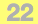

API_CWPanelType
Represents a Curtain Wall Panel element.
typedef struct {
API_Elem_Head head;
short pen;
short filler_1[3];
API_OverriddenAttribute outerSurfaceMaterial;
API_OverriddenAttribute innerSurfaceMaterial;
API_OverriddenAttribute cutSurfaceMaterial;
API_AttributeIndex buildingMaterial;
API_AttributeIndex cutLineType;
short cutLinePen;
bool deleteFlag;
bool defaultSubElem;
UInt32 segmentID;
API_CWPanelObjectTypeID objectType;
double thickness;
API_Guid owner;
API_Guid symbolID;
bool hasSymbol;
bool hidden;
Int32 libInd;
UInt32 classID;
UInt32 edgesNum;
UInt32 gridPolyIDsNum;
API_Coord3D centroid;
GS::uchar_t className[256];
} API_CWPanelType;
Members
- head
- General element header.
- pen
- For internal use.
- outerSurfaceMaterial 
- Material override structure of the exterior surface of the panel.
- innerSurfaceMaterial
- Material override structure of the interior surface of the panel.
- cutSurfaceMaterial
- Material override structure of the edge surface of the panel.
- buildingMaterial
- Building Material of the panel.
- cutLineType
- Line index of the cut part of the panel on the floorplan.
- cutLinePen
- Pen index of the cut part of the panel on the floorplan.
- deleteFlag
- Flags a panel class for deletion. In this case, the panel's className should be the name of the class to substitute it with.
- defaultSubElem
- Tells if this is the default panel for the curtain wall.
- segmentID

- Identifier of containing segment.
- objectType
- Type of the panel. See API_CWPanelObjectTypeID.
- thickness
- Thickness of the panel.
- owner
- Owner Curtain Wall.
- symbolID
- Object identifier if the panel is GDL based.
- hasSymbol
- True if the panel is GDL based.
- hidden
- Deleted panels remain in the database.
- libInd
- Object Library Part index if the panel is GDL based.
- classID
- edgesNum
- Number of neighbour frames.
- gridPolyIDsNum
- Reserved for internal use.
- centroid
- The 3D coordinates of the panel's centroid.
- className
- Name of the Panel class.
Remarks
The Curtain Wall is a hierarchical (system) element consisting of Frame, Panel, Accessory and Junction components: these are the Members of the Curtain Wall, arranged on a Base Surface according to a pre-defined scheme.
Requirements
- Version: API 12.0 or later
- Header: APIdefs_Elements.h
See Also
API_CWPanelObjectTypeID
API_CurtainWallType,
API_CWAccessoryType,
API_CWFrameType,
API_CWJunctionType,
API_CWSegmentType
API_AttributeIndex,
API_Polygon,
API_Coord,
API_PolyArc,
API Types